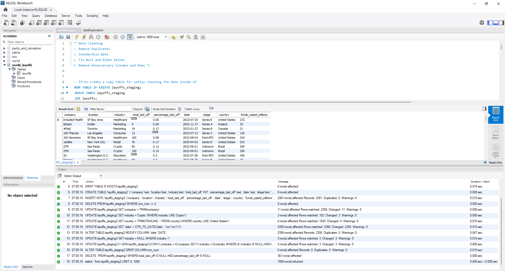
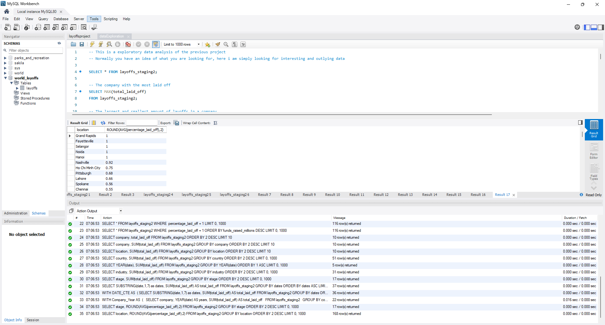
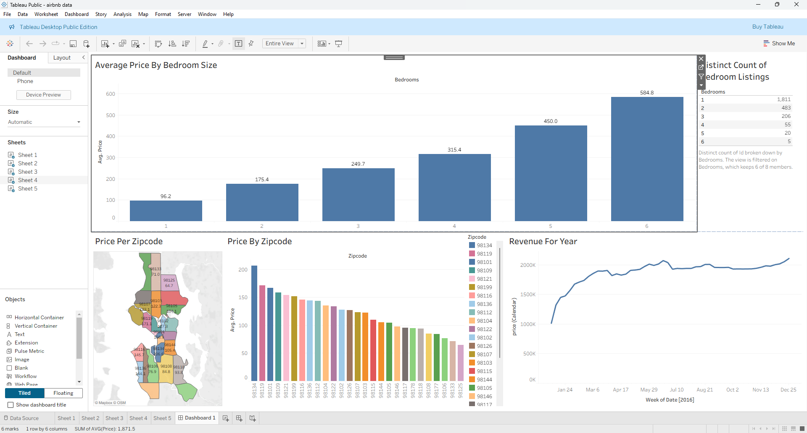
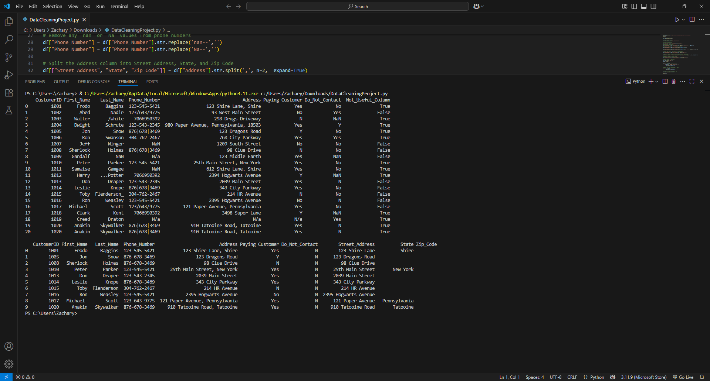
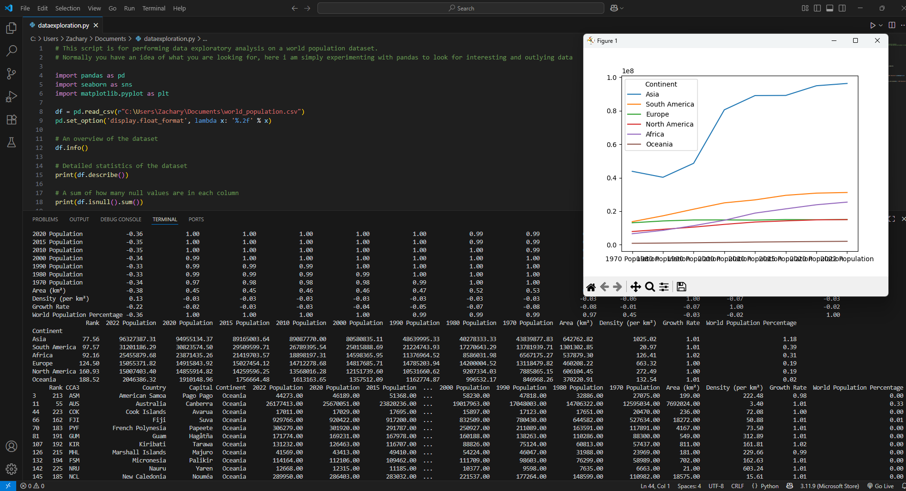
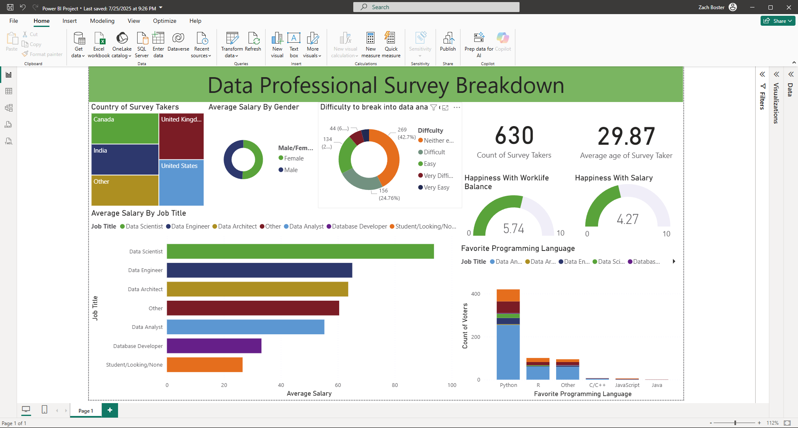
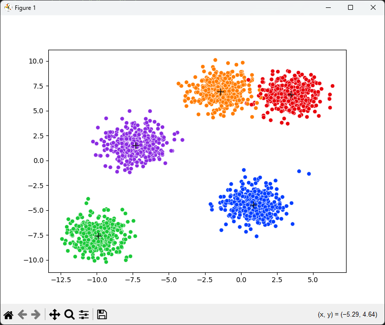

In this project, I worked with raw housing data to perform a full data cleaning process using SQL. I used UPDATE, ALTER TABLE, and CASE statements to fix inconsistent formatting, handle null values, and standardize entries. I also removed duplicate records, trimmed whitespace, and converted data types to ensure data integrity. This project strengthened my understanding of SQL syntax and best practices in data preparation—skills essential for accurate analysis and reporting.


Performed exploratory analysis on a global tech layoffs dataset to uncover patterns, trends, and anomalies using SQL. Applied aggregate functions, window functions, and common table expressions (CTEs) to identify top companies by layoffs, track rolling totals, and highlight complete workforce reductions. This project strengthened my ability to write efficient SQL queries, explore real-world datasets, and draw meaningful insights from raw information.

Developed an interactive Tableau dashboard to analyze Airbnb listings and booking trends. Utilized data visualization techniques to uncover key insights related to pricing, location, and occupancy rates. This project strengthened my skills in data cleaning, dashboard design, and storytelling through visual analytics, enabling effective communication of complex data patterns to a broad audience.

Executed a comprehensive data cleaning process using pandas and NumPy, focusing on identifying and handling missing values, removing duplicates, correcting data type inconsistencies, and standardizing categorical values. Applied techniques such as string manipulation, lambda functions, and conditional filtering to ensure data quality. This project strengthened my ability to write clean, efficient code for data preparation and built a solid foundation for downstream analysis.

Performed exploratory data analysis (EDA) using pandas, NumPy, and matplotlib to uncover patterns, trends, and relationships within a real-world dataset. Conducted descriptive statistics, created grouped summaries, and visualized key metrics to support data-driven insights. Utilized techniques such as value counts, correlation analysis, and data segmentation to understand variable distributions and potential drivers of outcomes. This project enhanced my ability to interpret and communicate data findings effectively.

Built an interactive Power BI dashboard to analyze survey data from data professionals. Used Power BI to clean and visualize data, showing key insights such as average salary by job title, favorite programming languages, and survey demographics. Created charts and graphs to highlight trends in work-life balance, salary satisfaction, and the difficulty of entering the data field. This project demonstrates my ability to use Power BI for data cleaning, visualization, and storytelling to communicate findings clearly to both technical and non-technical audiences.

Developed a machine learning model using K-Means clustering to segment data into distinct groups based on feature similarity. The algorithm works by initializing centroids, assigning data points to the nearest centroid using Euclidean distance, and iteratively updating the centroids to minimize within-cluster variance. Calculated the inertia score to measure clustering performance and used the elbow method to determine the optimal number of clusters. This project strengthened my ability to apply analytical thinking, interpret model outputs, and translate complex data patterns into actionable insights.